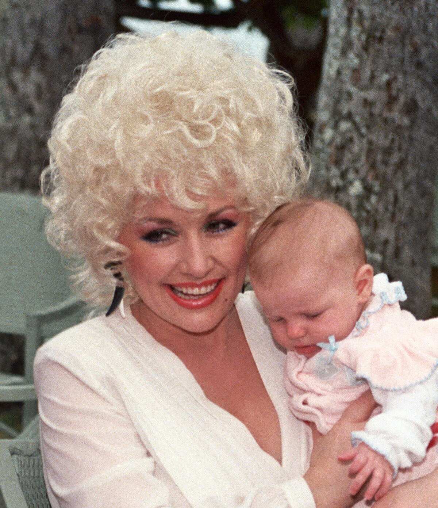

Dolly Parton dead at 80 is now confirmed fact, not another false alarm.
She died on August 25, 2026, after a brief battle with cancer.
Her family, and now a wave of tribute clips across social media, have made that painfully clear.

Table of Contents
Dolly Parton Dead at 80: How She Died
Dolly Parton's family confirmed her death in a statement released August 25, 2026.
She died at the Vanderbilt-Ingram Cancer Center in Nashville.
The cause was a brief, previously undisclosed battle with cancer.
Her nephew Bryan Seaver announced the news in a video posted to her own social media accounts.
The Official Statement
Her team's statement read in part: "After bravely facing a brief battle with cancer, Dolly departed her Earthly life today at the Vanderbilt-Ingram Cancer Center surrounded by loved ones."
Parton had spoken publicly about "health challenges" as recently as an August 21 interview, without naming cancer.
She had already lived through repeated death hoaxes over the years, including one debunked by Snopes.
This report is different, confirmed by her own family and major news outlets.
A Career That Defined Country Music
Parton was born January 19, 1946, in rural Sevier County, Tennessee, the fourth of twelve children.
Her first album, "Hello, I'm Dolly," came out in 1967.
That's the same late-1960s Nashville Sound era covered in our 1960s country music hub.
She released nearly 50 studio albums and sold more than 100 million records worldwide.
She won 10 Grammy Awards from 55 nominations.
Songs and Records That Still Stand
Parton wrote both "Jolene" and "I Will Always Love You" in 1973, on the same day, by her own account.
Guinness World Records credits her with country music's longest span of number one hits.
That span ran 43 years, from 1977 to 2020.
"9 to 5," her 1980 hit from the film of the same name, earned her an Academy Award nomination.
She married Carl Dean in 1966, a marriage that lasted almost 60 years until his death in March 2025.
The couple never had children, a choice Parton spoke about openly.
Her philanthropy included the Dollywood Foundation, founded in 1988.
She also gave $1 million toward COVID-19 vaccine research at Vanderbilt University in 2020.
Why She's Trending Now
Tribute clips are flooding TikTok in the hours since the announcement.
Fans have gathered outside her Tennessee home, leaving flowers, balloons, and handwritten cards.
One clip of that scene, posted by the news account The Nightly, is circulating widely.
Fellow artists including Reba McEntire and Mick Jagger have publicly mourned her online.
Streams of "Jolene," "9 to 5," and "I Will Always Love You" are climbing as fans return to her catalog.
FAQ
How did Dolly Parton die?
She died at the Vanderbilt-Ingram Cancer Center in Nashville on August 25, 2026.
She was surrounded by loved ones after a brief cancer battle.
What was Dolly Parton's cause of death?
Her family confirmed cancer as the cause.
The specific type has not been made public.
How old was Dolly Parton when she died?
She was 80.
She was born on January 19, 1946, in rural Sevier County, Tennessee.
Is the news that she has died confirmed, not a hoax?
Yes.
Her family released an official statement.
Her nephew Bryan Seaver confirmed it in a video posted to her verified accounts.
What songs was Dolly Parton best known for?
Jolene and I Will Always Love You, both written in 1973, along with her 1980 hit 9 to 5 from the film of the same name.
This one joins the rest of the Trending section.
For more from the era her career began in, try our 1960s music personality quiz or the 1960s trivia game.
Back to the 1960smusic.net homepage, part of the music world Dolly Parton dead headlines are now closing a chapter on.